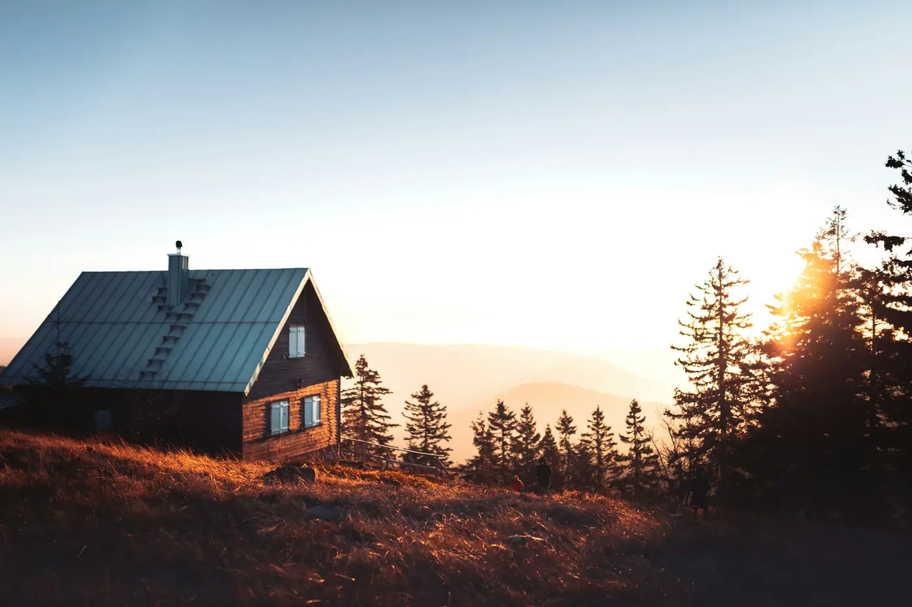

窗外 · 06:12 · 晴 · 这扇窗会跟着页面变
01山与屋THE HOUSE
把时间交还给山林
2019 年秋天，我们在云岭深处迷了路。雾散的时候，眼前是一间荒废的林场管护站：屋顶塌了一半，窗框还结实。我们在门口站了很久，谁也没说话。
两年后，它成了山谷留宿。沈树带着两位老木匠，把倒下的梁重新架起来；阿岚在屋后挖出了那眼温泉。旧窗我们都留着，因为从那里看出去的山谷，和二十年前护林员看到的，是同一座。
这里只有九间房。没有电视，Wi-Fi 只在壁炉厅有一格信号。我们希望你把时间交还给山林——早晨被鸟叫醒，白天去走一条小路，晚上守着炉火，读完半本书。
- 01
九间房，不再多一间
住客少，山谷才安静。我们从不超售。
- 02
没有电视，有炉火和书
三千册书，读完可以留下你带来的那一本。
- 03
一日三餐，跟着时令
今天吃什么，看后园的菜地和山里刚长出来的东西。
- 04
能走就不开车
四条步道，都从门口出发。
主理人 阿岚 & 沈树 · 板栗和栗子（狗）品牌故事为虚构示例
窗外的一天摄影素材来自 Unsplash，仅作氛围示意
